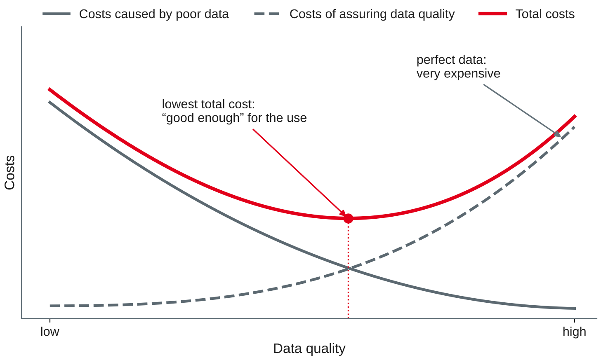

Data Management
Definition · data quality dimensions and criteria · measurement methods and metrics · causes and business cost of poor data
DHBW · Digital Business Management (Business IT) · Semester 2
NOT NULL, CHECK, UNIQUE, FOREIGN KEYYour preparation: one example of "bad data" from your company. What was wrong, who noticed it — and what did it cost?
Compare your examples with your neighbour.
Fitness for use
"We define 'data quality' as data that are fit for use by data consumers." (Wang & Strong, 1996)
Wang and Strong (1996); DAMA International (2017, Chapter 13).
| Use of the bike shop's customer table | What "good enough" means |
|---|---|
| E-mail newsletter | every recipient has a valid e-mail and has agreed — duplicates mean annoyed customers |
| Invoice by post | name, street, postcode and city complete and correct for this customer |
| Customers per city for a new branch | the city spelt consistently; a few missing streets do not matter |
| Reminder for the annual service | the current owner of the bike and a current contact |
Own example based on the bike shop case; fitness for use from Wang and Strong (1996).
What exactly do we measure?
| Category | Dimensions (Wang & Strong, 1996) |
|---|---|
| Intrinsic: the data in itself | accuracy, objectivity, believability, reputation |
| Contextual: for the task at hand | value-added, relevancy, timeliness, completeness, appropriate amount of data |
| Representational: how data is presented | interpretability, ease of understanding, representational consistency, concise representation |
| Accessibility: how data is reached | accessibility, access security |
Wang and Strong (1996); German-language overview in Hildebrand et al. (2025).
| Dimension | Question | Bike shop example of a defect |
|---|---|---|
| Completeness | Is all data needed for the use there? | customer without e-mail for the newsletter |
| Validity | Does the value fit the format, type and range? | postcode 6811, birth date 2031-04-01 |
| Accuracy | Does the data reflect reality? | bike shown "in stock", but already sold |
| Consistency | Do values agree within and across records and systems? | postcode of Heidelberg, city "Mannheim" |
| Uniqueness | Is each real-world thing recorded once? | Anna Berger with two web shop accounts |
| Timeliness | Is the data up to date and there when needed? | address last checked four years ago |
Government Data Quality Hub (2021), following DAMA UK; DAMA International (2017, Chapter 13); Batini et al. (2009).
ISO and IEC (2008).
A dimension becomes measurable through a rule (criterion) for a column, a record or a table.
| Rule type | Example rule | Dimension |
|---|---|---|
| Mandatory | a newsletter subscriber has an e-mail address | completeness |
| Format, domain | a postcode has five digits; newsletter is yes or no | validity |
| Range, plausibility | a birth date lies between 1910 and today | validity |
| Cross-field, reference | the postcode belongs to the city (reference list) | consistency |
| Key, duplicate | one account per e-mail address | uniqueness |
| Age | an address was confirmed within the last 24 months | timeliness |
Own examples; rule types based on DAMA International (2017, Chapter 13) and Batini et al. (2009).
Name the dimension that is violated first. Some cases fit two — say why.
Methods and metrics
Data profiling
Statistics per column: rows, NULLs, distinct values, min, max, frequencies. Finds the unexpected.
Rule checks
Count the records that break a business rule. Repeatable, automatic — the basis of metrics.
Comparison with reality
Check against a trusted reference or the real world: stock count, sample of customer calls. The only way to measure accuracy.
Asking the users
A survey of the people who use the data: is it believable, understandable, useful? Subjective, but essential.
Based on Pipino et al. (2002), Batini et al. (2009) and DAMA International (2017, Chapter 13).
Simple ratio: share of records that satisfy the rule
quality = 1 − (records that break the rule) / (records checked)
Based on Pipino et al. (2002); own example on the web shop export.
SELECT count(*) AS rows, count(e_mail) AS e_mail,
count(DISTINCT city) AS cities,
min(birth_date) AS min_birth, max(birth_date) AS max_birth
FROM webshop_customer; -- 20 | 18 | 6 | 12.06.1999 | 2031-04-01
SELECT city, count(*) FROM webshop_customer
GROUP BY city ORDER BY 2 DESC; -- Mannheim 8, Heidelberg 6, …, MANNHEIM 1, NULL 1min(birth_date) = '12.06.1999': text sorts digit by digit — a German date hides among ISO datesmax(birth_date) = 2031-04-01: a customer not yet bornOwn example on the web shop export (bikeshop-dq-session13.sql); SQLite (n.d.-b).
-- validity: share of e-mail addresses with a plausible format SELECT round(100.0 * sum(e_mail LIKE '%_@_%._%') / count(e_mail), 1) FROM webshop_customer; -- 94.4 -- uniqueness: e-mail addresses used by more than one account SELECT lower(e_mail), count(*) FROM webshop_customer WHERE e_mail IS NOT NULL GROUP BY lower(e_mail) HAVING count(*) > 1; -- anna.berger@example.org 2 -- consistency across systems: web shop vs. till system SELECT w.account_id, w.e_mail, c.e_mail FROM webshop_customer AS w JOIN customer AS c ON c.customer_no = w.customer_no WHERE w.e_mail IS NOT c.e_mail; -- W05, W10
Own example on the web shop export; SQLite (n.d.-c).
SELECT b.frame_no AS in_database, s.frame_no AS counted FROM (SELECT frame_no FROM bike WHERE customer_no IS NULL) AS b FULL JOIN stock_count AS s ON s.frame_no = b.frame_no;
| in_database | counted |
|---|---|
| GZT884 | GZT884 |
| TRK311 | TRK311 |
| KTM530 | NULL |
| GZT886 | GZT886 |
| NULL | CUB204 |
Own example on the bike shop data and the stock count of 2027-04-30; SQLite (n.d.-b).
| Rule (web shop export) | Dimension | Result | Threshold |
|---|---|---|---|
| e-mail present | completeness | 90.0 % | 95 % |
| e-mail has a valid format | validity | 94.4 % | 99 % |
| postcode has five digits | validity | 89.5 % | 99 % |
| one account per person (name + birth date) | uniqueness | 90.0 % | 100 % |
| changed within the last 24 months | timeliness | 80.0 % | 80 % |
Own example on the web shop export; metrics based on Pipino et al. (2002).
Why data goes bad — and why it matters
| Cause | Example |
|---|---|
| Data entry by people | typos, (at) instead of @, a default value 1900-01-01 left in the field |
| Missing rules in the system | no CHECK, free text instead of a list, foreign keys switched off |
| Integration of sources | web shop and till system with different keys, formats and spellings |
| Data decay | people move, change e-mail addresses, bikes are sold |
| Processes and organisation | nobody owns the data; errors are fixed downstream, not at the source |
| Migration and conversion | old system with other formats; dates 12.06.1999 copied as text |
Based on DAMA International (2017, Chapter 13) and Redman (2016); own examples from the web shop export.
| Operational effects | Strategic effects | |
|---|---|---|
| Direct (visible) | parcel returned, newsletter bounces, wrong bike sold twice | wrong stock figures, so the shop orders too many e-bikes |
| Hidden (not visible) | staff check and correct lists by hand; customers wait | a new branch planned for the wrong city; lost customer trust |
Classification based on Haug et al. (2011); Redman (2016); own bike shop examples.

Own illustration based on Haug et al. (2011); qualitative, no data.
Measure before you clean
import sqlite3
con = sqlite3.connect("bikeshop.db")
con.execute("PRAGMA foreign_keys = ON")
for script in ["bikeshop-schema.sql", "bikeshop-data.sql",
"bikeshop-data-session09.sql",
"bikeshop-dq-session13.sql"]: # new
with open(script, encoding="utf-8") as f:
con.executescript(f.read())Own example based on the bike shop case; all data fictional.
Fresh database with all four scripts. Predict first, then query. Record each result as a ratio.
postcode_ref); web shop vs. till system (customer)customer now?Own example on the web shop export; SQLite (n.d.-a, n.d.-c).
Milestone 4 loads real or open data into your database.
Your rules and first measurements are the starting point for milestone 4 (data loading and quality, after session 16).
Preparation: finish the hands-on questions and worksheet 13; install pandas (pip install pandas) and test import pandas in Jupyter; bring your team's five quality rules.